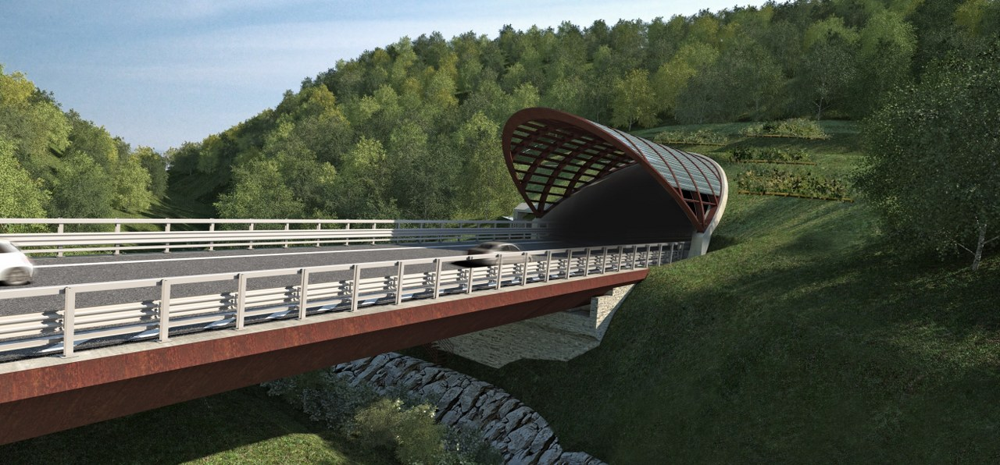

Mocaiana è fornita di una palestra comunale, annessa alle scuole medie ed elementari, nella quale si svolgono corsi di ballo, attività di pattinaggio, di arrampicata su parete rocciosa svolta dal C.A.I. (Club Alpino Italiano), partite ed allenamenti di calcio a 5 ed altre varie attività. È presente, inoltre, un campo di calcio a 5 all'aperto in prossimità della palestra.
